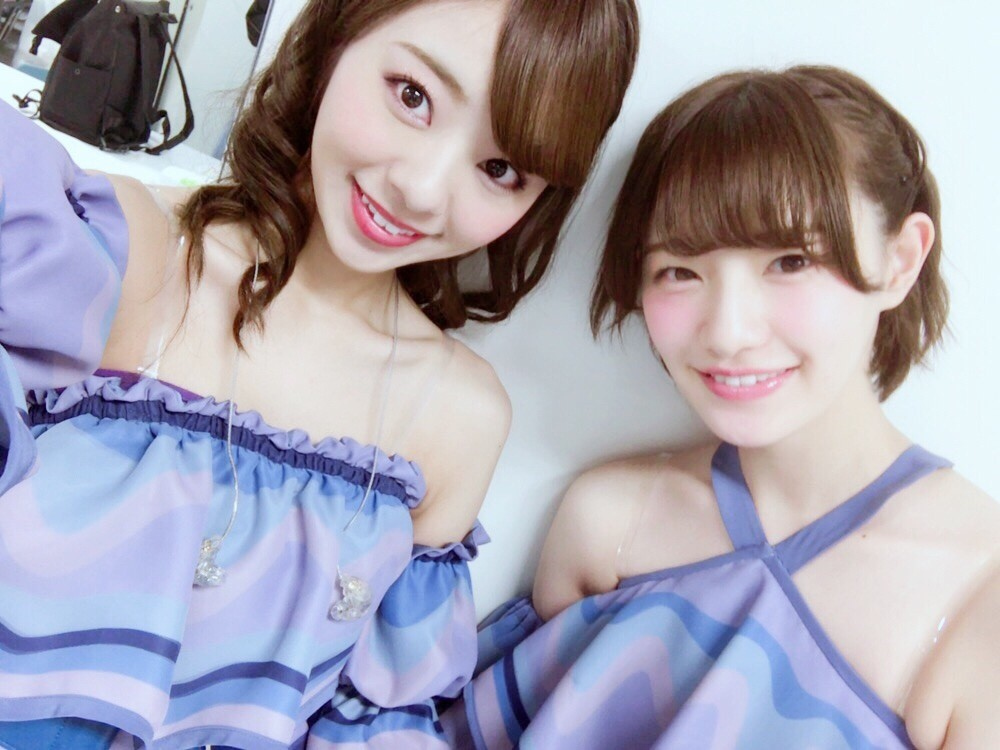
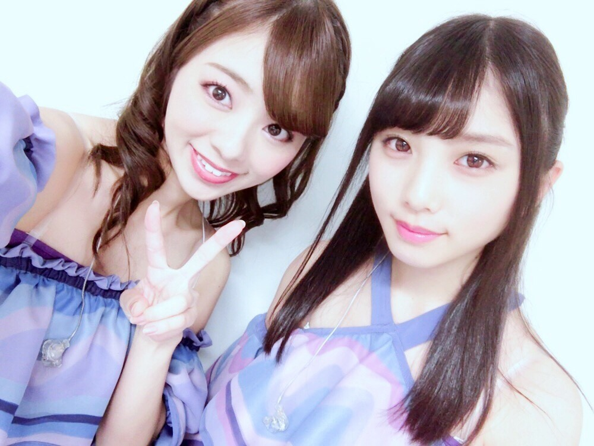

こんにちわ♡
逃げ水の衣装ですよ♡♡
全国ツアー真っ最中...
無事に仙台公演が終了致しました！
仙台は本当に涼しかったです♪
移動中はよくカーテンの中に頭をつっこんで外の景色を見てるんですが... 広々とした景色に緑，空気も綺麗で癒されました。 それにとっても涼しくて長袖着てる人も沢山いました。
仙台のご当地グルメも沢山頂いちゃいました(^_^*) メンバーと沢山写真撮ったんだけど全部周りのメンバーが持ってるんですよね♡笑
なので次からは私の携帯でも撮る様に心がけてみます 笑
仙台に集まってくれた皆さん本当にありがとうございました‼︎
2shotはあるよ。


ぃゃぃゃ，このゆうき大人っぽ過ぎでしょ．笑♡
一緒にいる時は本当に可愛い妹ちゃんなのに，顔だけ並ぶと私より大人っぽいんじゃないか‼︎って思っちゃう(*^^*)
そしてー‼︎
今日からは大阪ですね。
地元ですよ。
ただいまーーーーー。
大阪、よろしくお願いしますね♡
ぁ 仙台から帰ってきてすぐひめかに会いに行ってたの(*^^*)
可愛いワンちゃんも居て癒されたよ。ワンちゃん飼いたくなっちゃったぁ(*^^*)
と言う事で今日から3日間は大阪パワーチャージしますね♡